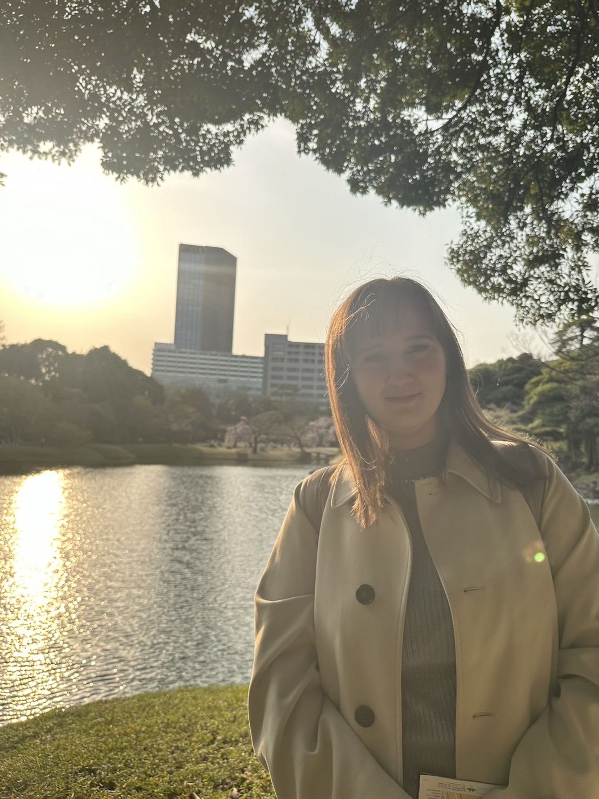

- 名前:
- フリーマン・サラ
- 国籍:
- スウェーデン
「日欧のルール、マナーの違いについて」
留学生が感じる不安や疑問を減らしたいと思いこのウェブサイトを作りました。
私はウェブデザイン科の１年生です。
日本語学校から専門学校へ進学しました。
日本人が多い環境や初めて感じる日本のルールやマナーに戸惑うことが多くありました。
しかし、今では専門学校はとても過ごしやすいと感じるようになりました。
特に私がこの学校で良いと思っているのは、社会に出る前にルールやマナーを学べることです。
ここでは留学生へインタビューを行い実際の声や役立つ情報を共有していきます。
同じような不安を感じているヨーロッパから来た留学生の皆さんにとって、少しでも安心材料となれば嬉しいです。
専門学校での生活が、皆さんにとって楽しく充実したものになりますように。